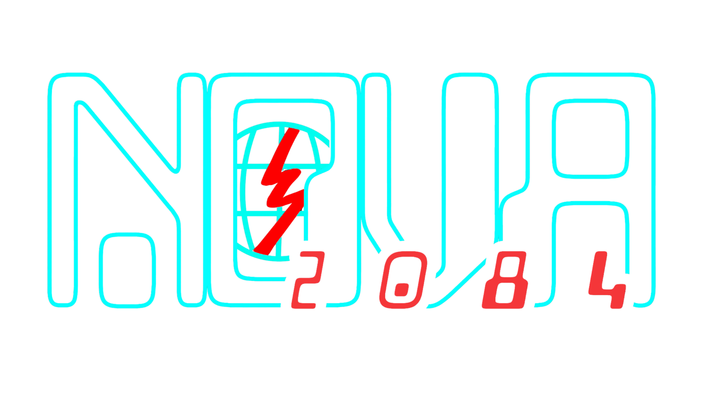

NOVA 2084 Info
NOVA 2084 is an ambitious, adult dystopian sci-fi comic series in current development by a group of young adults.
Inspired by the 1984 by George Orwell, Novaur & StellarSky, the creators of NOVA 2084, are determined to create the ambitious comic series that not only makes you question the state of technology and authority, but the quiet, dark truths no one wants to talk about.
As of now, NOVA 2084 is current development.
We very much can't wait for you to experience this original, dark, reality-breaking story, inspired by our love of Orwellian dystopian fiction and more!
